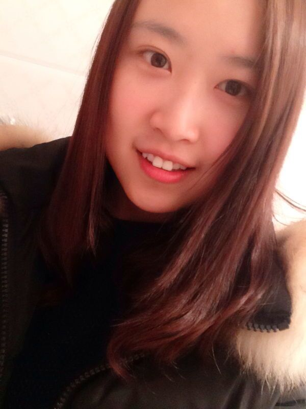
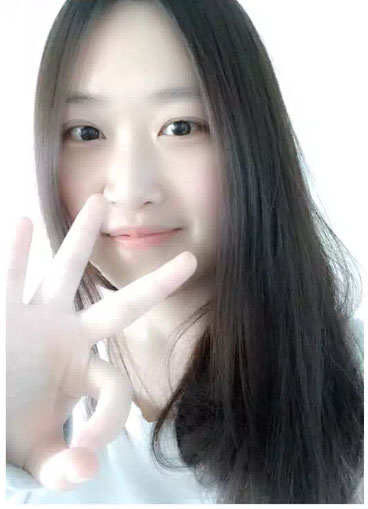
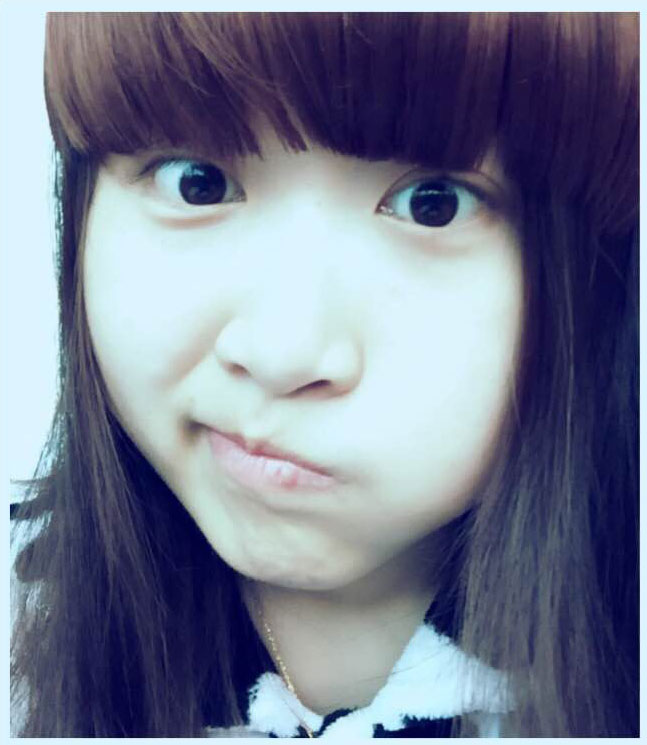
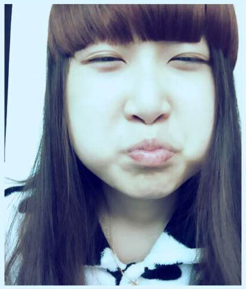
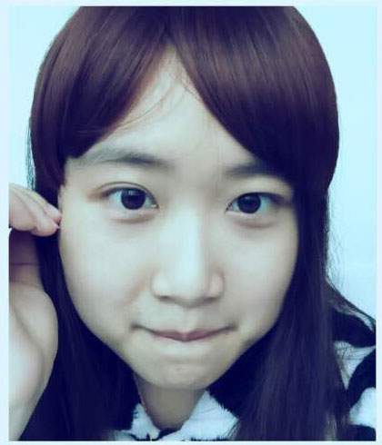
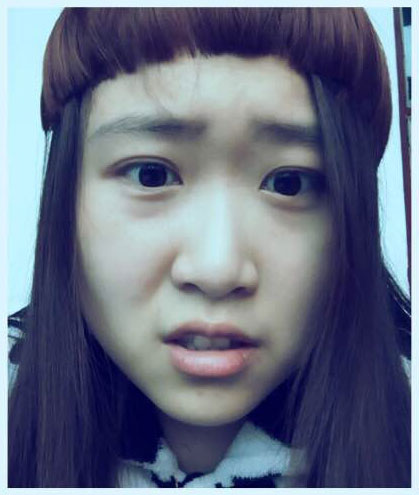

写给某人的信
应某人要求，我虽然说没打算写，但是我还是偷偷的写了，虽然这算不上是一封检讨书。
先说说我们的相识吧，可能也是因为一个人太久，厌倦了没有人能聊天，一个人吃饭，一个人看电影，也可能有时候会有点点孤单，想着是不是该找个女朋友了，在群里说笑要他们帮忙介绍。
有一天，磊磊说有个女孩子要介绍给我，给了她的照片，然后加了微信，昵称居然是“笑着去要饭”，感觉挺有意思的，也对她产生了好奇。
第一次见面是在2015年3月1号，其实离第一次加微信聊天已经蛮久了，但是期间因为各种事耽误了。她有点害羞，想把磊磊也拉来（难道不觉得他在会更尴尬么）..然后我就和磊磊约好，磊磊借口陪女朋友来不了..然后造就了我们的第一次约会。恩，顺便提一下，是位小路痴，哈哈，鼻子很灵。
由于磊磊的大嘴巴，那次约会早就在群里传开了，那天晚上刚好有我们6个的聚餐，晚上也把她带过去了（其实她不知道，我们在群里约好，如果中意的话，晚上就把她带过去）
其实我回家的频率并不高，但是因为想见她，只要周末没事我都回家了，但是天气不给力（她不喜欢下雨天出来），认识3个月了，见面的次数一只手都数的过来，真的非常可惜..
最近她说介绍了同学认识，3天就牵手成功了，其实我很羡慕，非常羡慕，但是我们见面太少，太不熟悉了（虽然聊天聊得不错），其实约会不一定要去哪里玩的，坐下来面对面聊聊天，吃吃饭，看看电影都挺好的。
今天，我们吵架了，因为她说不要我管了，而我赌气得回了一句“你找到对象我就不管了”，其实我并没有其他意思，只是觉得如果她找到对象了，自然由她对象来管，无论对象是不是我。而且这句真的是气话，后来我也发现我不应该说这句话，我的错。
其实吵架挺好的，生活就是这样，磕磕绊绊，如果两个人从没吵过架，那是不正常并且很危险的。我希望我们偶尔能吵吵架，当然前提是能和好，如果不能和好的话宁可不吵架~。
最后说说心里话，恩..某人真的不胖~